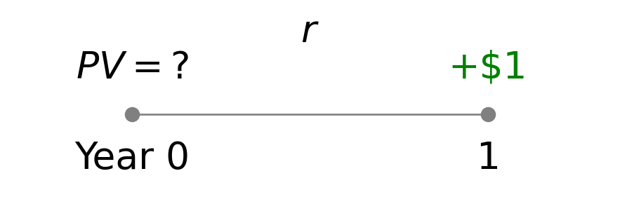
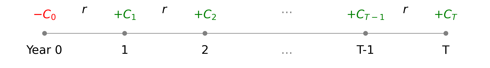
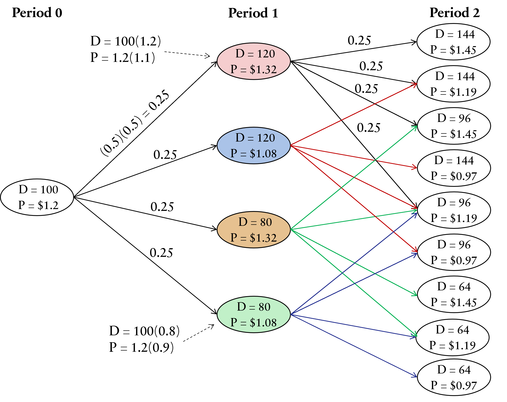
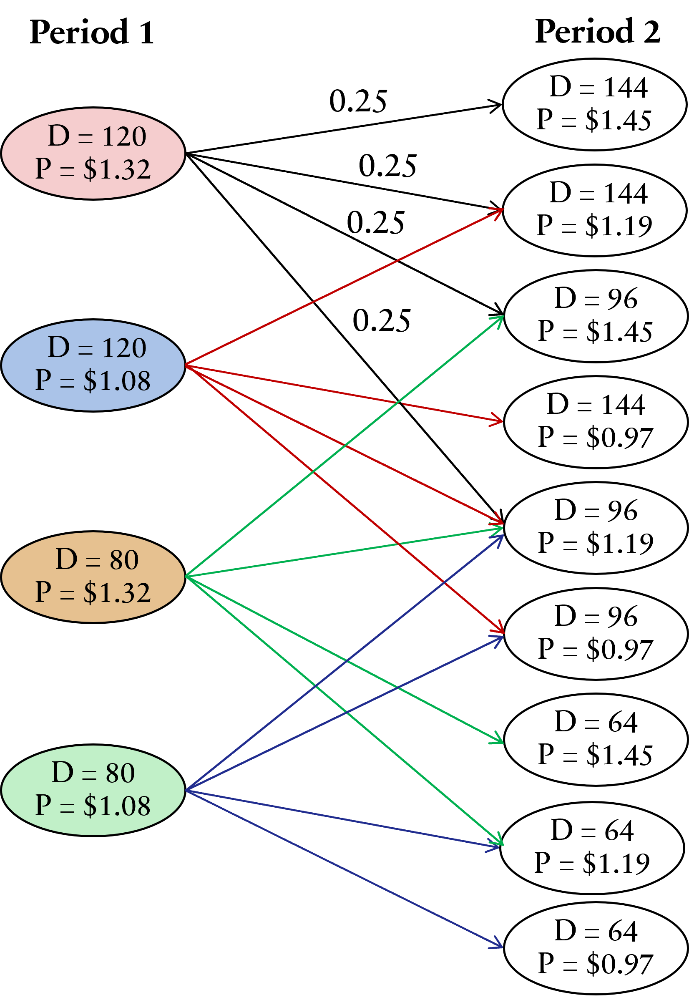

Topic 4: Network Design Under Uncertainty
05115130 Supply Chain Modelling and Optimisation
8 Jun 2026
Goals Today
Introduction
- Sources of uncertainty and Risk
Strategic decision tools in SC network design
- Components of cash flow
- Cash flow equation
Discounted cash flow (DCF) for network design
- Components of a DCF
- Incorporating uncertainty into DCF
- DCF calculation process
- Net present value (NPV)
- Binomial representation of Uncertainty
- Multiplication binomial
- Additive binomial
Decision tree
- Evaluating NPV using decision tree (Bellman’s Principle)
1. Introduction
SC network design and how companies structure and optimise their supply chains.
Key design decisions
- Location of production facilities
- Location of distribution centers
- Inventory levels
- Transportation flows
Uncertainty in Supply Chains
These decisions are made while key parameters fluctuate unpredictably:
Demand
Supply
Costs
Lead times
This uncertainty creates challenges for traditional deterministic planning.
1.1 Sources of Uncertainty and Risk
- Demand Uncertainty
- Variations in customer demand across regions or over time
- Seasonality, trends, and unexpected spikes (e.g., promotions, pandemics)
- Supply Uncertainty
- Reliability of raw materials or components
- Quality issues, supplier financial stability, or capacity constraints
- Cost and Price Fluctuations
- Changes in labour rates, material costs, or exchange rates
- Energy price volatility affecting production and transportation
- Lead Time Variability
- Transportation delays due to logistics bottlenecks, customs, or weather events
- Production lead times extended by machine breakdown or labour strikes
- External Disruptions
- Natural disasters (floods, earthquakes, pandemics) halting production or shipping
- Geopolitical risks (tariffs, sanctions, border closures)
2. Strategic Decision Tools in SC Network Design
New objective
Minimise costs while maintaining service levels and resilience to disruptions.
When designing a SC network under uncertainty, companies must balance long-term costs and risks while meeting service requirements.
Two widely used tools to support this strategic decision-making are
Discounted Cash Flow (DCF) Analysis
Decision Trees
Cash flow (CF)
The net amount of cash and cash equivalents being transferred into and out of a business over a specific time period. Inflows are positive CF (e.g. revenue), while outflows are negative CF (e.g. expenses).
2.1 Components of Cash Flow
Cash flow can be categorised into three primary activities
Operating
- Sales revenue
- Payments to suppliers
- Wages and operating costs
Investing
- Purchase of equipment
- Infrastructure investments
- Asset sales
Financing
- Loans and debt repayment
- Equity financing
- Dividend payments
2.2 Cash Flow Equation
Net Cash Flow = Total Cash Inflows − Total Cash Outflows
3. Discounted Cash Flow (DCF) for Network Design
DCF is a valuation method used to estimate the value of an investment based on its expected future cash flows. The DCF model calculates the present value (PV) of these cash flows, taking into account the time value of money.
Time value of money
Money (or CF) today are worth more than the future
$100 Today
$100 in 10 years time?
DCF is widely used in finance to assess the intrinsic value of a company or project by discounting future cash flows back to their present value.
It is also used in capital budgeting and investment analysis to evaluate the profitability of projects, including supply chain network design decisions.
3.1 Components of a DCF for Network Design
| Component | Description |
|---|---|
| 🏭 Initial Investment | Also known as capital expenditure (CapEx), these are upfront costs for land, facilities, and equipment. |
| 💰 Operating Cash Flows | Ongoing revenues and costs from production and distribution. |
| 📦 Working Capital | Funds tied up in inventory and accounts receivable/payable. |
| 🏗 Terminal Value | The value of the project beyond the forecast period, often based on salvage value or perpetuity. |
| % Discount Rate | The rate used to discount future CFs, typically the Weighted Average Cost of Capital (WACC) adjusted for project risk. |
| The sum of discounted CFs, used to evaluate the profitability of the project. |
3.2 Incorporating Uncertainty into DCF
⏳ Time Value of Money
Cash in the future is worth less than cash today
Reasons:
Inflation & Opportunity cost
Risk and uncertainty
📊 Scenario Analysis
- Evaluate NPV under multiple scenarios
- Examples: High, Medium, Low demand
- Calculate expected NPV using scenario probabilities
🎲 Stochastic Inputs
- Model uncertain parameters (demand, costs) as probability distributions
- Use Monte Carlo simulation to generate many possible NPVs
🔎 Sensitivity Analysis
- Test how changes in key inputs affect NPV:
- Discount rate
- Demand forecasts
- Material costs
How does the Concept Work?
💰 Forecast Future CFs
- Estimate expected CFs
- Revenues
- Salvage value
- Estimate CF outflows
- Expenses
- Investments
- Forecast for several years
(e.g., 5–10 years or longer)
📉 Select a Discount Rate
Represents the required rate of return or the cost of capital
Reflects compensation for investment risk
Commonly used: Weighted Average Cost of Capital (WACC)
May be adjusted for project-specific risk
Key Idea
Future cash flows are converted into present value using a discount rate.
3.3 DCF Calculation Process
💰
Estimate yearly inflows and outflows
\(CF_1, CF_2, CF_3, \dots, CF_n\)
📉
Convert future cash flows into present value
\(PV_t=CF_t / (1+r)^t\)
📈
Subtract initial investment
\(NPV = \sum PV_t - C_0\)
🧮
Add discounted cash flows
\(\sum PV_t\)
Decision Rule: Choose the network design with the highest positive NPV.
3.4 Discount the Cash Flows Formulas
Consider a simple example of receiving $1 in one year. The present value (PV) of that future cash flow can be calculated using the formula:
\[ \text{Discount factor} = \frac{1}{1+r} = PV_0 \]

\[ \text{NPV}=C_0+C_1\left(\frac{1}{1+r}\right)+C_2\left(\frac{1}{1+r}\right)^2\ldots+C_{T-1}\left(\frac{1}{1+r}\right)^{T-1}+C_T\left(\frac{1}{1+r}\right)^T \]
What is the PV formula at time \(t\)? Can you simplify it to the NPV formula?
3.5 Net Present Value
Convert each future cash flow into present value
Use the formula, \(C_t\) denotes cash flow in period t,
\[ PV_t = \frac{C_t}{(1+r)^t} \]
where \(r\)= the discount rate and \(t\)= time period (years).
- Summing all present values gives the Net Present Value (NPV):
\[ NPV = C_0 + \sum_{t=1}^T \left(\frac{1}{1+r}\right)^tC_t \]
where \(T\) = Total number of periods and \(C_0\) = Initial investment.
Interpreting NPV Results
| NPV | Interpretation | Suggested Action |
|---|---|---|
| > 0 | The project is expected to generate more cash than it costs, indicating a profitable investment. | Consider proceeding with the project. |
| = 0 | The project is expected to break even, generating CFs equal to the initial investment. | The project may be acceptable, but it does not create additional value. |
| < 0 | The project is expected to generate less cash than it costs, indicating a loss. | Consider rejecting the project or re-evaluating assumptions. |
Decision Rule
Conduct a scenario analysis to evaluate NPV under different assumptions (e.g., demand levels, cost fluctuations).
Prefer projects with higher positive NPV as they are expected to add more value to the company.
3.5.1 Example 1
Suppose you have a project requiring an initial investment of $200,000 (Year 0) with expected annual cash inflows over the next five years. Future cash inflows will be discounted at 10% to compute their present values.
- Fill in the missing values in the table below to calculate the NPV of the project.
- Evaluate whether the project is financially attractive based on the NPV result.
| Year | Cash Flow | Discount Factor (10%) | Present Value |
|---|---|---|---|
| 0 | -200,000 | ||
| 1 | 50,000 | ||
| 2 | 60,000 | ||
| 3 | 70,000 | ||
| 4 | 80,000 | ||
| 5 | 90,000 | ||
| NPV |
- To calculate the NPV, we first need to compute the discount factor for each year. Then, we can calculate the PV of each cash flow by multiplying the CF by its corresponding discount factor. Finally, we sum all the PVs to get the NPV.
| Year | Cash Flow | Discount Factor (10%) | Present Value |
|---|---|---|---|
| 0 | -200,000 | \((1.1)^0=1.0000\) | -200,000 |
| 1 | 50,000 | \((1.1)^{-1}=0.9091\) | 45,455 |
| 2 | 60,000 | \((1.1)^{-2}=0.8264\) | 49,583 |
| 3 | 70,000 | \((1.1)^{-3}=0.7513\) | 52,591 |
| 4 | 80,000 | \((1.1)^{-4}=0.6830\) | 54,640 |
| 5 | 90,000 | \((1.1)^{-5}=0.6209\) | 55,878 |
| NPV | $58,147 |
- Since the NPV is positive, the project is expected to generate more cash than it costs, indicating a profitable investment. Therefore, the project is financially attractive and may be considered for implementation.
3.5.2 Example 2
For the cash flows of two options with \(r = 0.1\) (10%), which option is better?
| Year | Option 1 | Option 1 PV | Option 2 | Option 2 PV |
|---|---|---|---|---|
| 0 | -1,000,000 | -1,400,000 | ||
| 1 | 300,000 | 400,000 | ||
| 2 | 300,000 | 400,000 | ||
| 3 | 300,000 | 400,000 | ||
| 4 | 300,000 | 400,000 | ||
| 5 | 300,000 | 400,000 | ||
| Option 1 NPV | Option 2 NPV |
- Fill in the missing values in the table to calculate the NPV of each option.
- Evaluate which option is better based on the NPV results.
- To calculate the NPV for each option, we will compute the present value of each cash flow using the formula \(PV_t = C_t/(1+r)^t = C_t(1+r)^{-t}\), where \(r = 0.1\) (10%). Then, we will sum the present values to get the NPV for each option.
| Year | Option 1 PV | Option 2 PV |
|---|---|---|
| 0 | \(-1,000,000(1.1)^0=-1,000,000\) | \(-1,400,000(1.1)^0=-1,400,000\) |
| 1 | \(300,000(1.1)^{-1}=272,727\) | \(400,000(1.1)^{-1}=363,636\) |
| 2 | \(300,000(1.1)^{-2}=247,934\) | \(400,000(1.1)^{-2}=330,579\) |
| 3 | \(300,000(1.1)^{-3}=225,394\) | \(400,000(1.1)^{-3}=300,526\) |
| 4 | \(300,000(1.1)^{-4}=204,904\) | \(400,000(1.1)^{-4}=273,205\) |
| 5 | \(300,000(1.1)^{-5}=186,276\) | \(400,000(1.1)^{-5}=248,369\) |
| Option 1 NPV \(= 137,236\) | Option 2 NPV \(= 116,315\) |
- Since the NPV of Option 1 is higher than that of Option 2, Option 1 is the better choice based on the NPV criterion.
3.5.3 Example 3: Target.com
Scenario
- Estimated demand: 100,000 units for online orders
- Required space: 1,000 sq. ft. for every 1,000 units
- Revenue: $1.22 per unit of demand
- Discount factor: 10% (\(r = 0.1\))
TARGET
Questions
- How much warehouse space should be leased in the next 3 years?
- Should Target sign a 3-year lease contract or obtain warehousing space on the spot market each year?
Option 1: Spot Market
- Spot market rate ~$1.20/sq.ft./year for each of the next 3 years
Option 2: 3-Year Lease Contract
- Fixed lease rate of $1.00/sq.ft. locked in for 3 years
Option 1: Obtain space from the spot market each year
- Spot market rate expected at $1.20/sq.ft./year for each of the next 3 years.
- Required space 1,000 sq. ft. for every 1,000 units.
- Estimated demand 100,000 units per year for online orders.
- Revenue $1.22 for each unit of demand.
First, calculate the expected annual profit (\(C_t\)) if space is obtained from the spot market using discount factor \(r = 0.1\) is given by
\[ \begin{aligned} \text{Profit} &= \text{Revenue} - \text{Expense} \\ &= (100{,}000 \text{ units} \times \$1.22) - (100{,}000 \text{ units} \times \$1.20) = \$2{,}000 \end{aligned} \]
| Year | \(C_t\) | \(PV_t\) |
|---|---|---|
| 0 | 2,000 | 2,000 |
| 1 | 2,000 | 1,818 |
| 2 | 2,000 | 1,653 |
| NPV | $5,471 |
\[ \begin{aligned} \text{NPV (no lease)} &= C_0 + \frac{C_1}{1+r} + \frac{C_2}{(1+r)^2} \\ &= 2{,}000 + \frac{2{,}000}{1.1} + \frac{2{,}000}{1.1^2} \\ \therefore \text{NPV (no lease)} &= \$5{,}471 \end{aligned} \]
Option 2: Sign a 3-year lease contract
- 100,000 sq.ft. of warehouse space are leased for the next 3 years.
- Target pays $1 per sq.ft. of space leased each year.
- Estimated demand 100,000 units per year for online orders.
- Revenue $1.22 for each unit of demand.
Thus, the expected annual profit (\(C_t\)) is
\[ \text{Revenue} - \text{Expense} = 100{,}000 \times \$1.22 - 100{,}000 \times \$1.00 = \$22{,}000 \]
| Year | \(C_t\) | \(PV_t\) |
|---|---|---|
| 0 | 22,000 | 22,000 |
| 1 | 22,000 | 20,000 |
| 2 | 22,000 | 18,182 |
| NPV | $60,182 |
\[ \begin{aligned} \text{NPV (Lease)} &= C_0 + \frac{C_1}{1+r} + \frac{C_2}{(1+r)^2} \\ &= 22{,}000 + \frac{22{,}000}{1.1} + \frac{22{,}000}{1.1^2} \\ \therefore \text{NPV (Lease)} &= \$60{,}182 \end{aligned} \]
Comparing the NPV of Two Options
| Year | \(C_t\) | \(PV_t\) |
|---|---|---|
| 0 | 2,000 | 2,000 |
| 1 | 2,000 | 1,818 |
| 2 | 2,000 | 1,653 |
| Option 1 | NPV | $5,471 |
| Year | \(C_t\) | \(PV_t\) |
|---|---|---|
| 0 | 22,000 | 22,000 |
| 1 | 22,000 | 20,000 |
| 2 | 22,000 | 18,182 |
| Option 2 | NPV | $60,182 |
The NPV of signing the lease is 60,182 - 5,471 = $54,711 higher.
Assume that there is no uncertainty in the demand and costs, Target.com should go with Option 2.
However, if there is significant uncertainty in demand or costs, Target.com may want to consider the flexibility of the spot market despite its lower NPV.
How does uncertainty affect the decision between the two options? And how can we incorporate uncertainty into the NPV analysis?
3.6 Binomial Representation of Uncertainty
A binomial distribution is a discrete probability distribution that models the number of successes in a fixed number of independent trials of a binary experiment — where each trial results in only one of two outcomes: success or failure.
\[ P(X=k) = \binom{n}{k} p^k (1-p)^{n-k} \]
for \(k=0,1,2,\dots,n\) and \[ \binom{n}{k} = \frac{n!}{k!(n-k)!} \]
| Symbol | Description |
|---|---|
| \(n\) | Total number of trials |
| \(k\) | Number of successes |
| \(p\) | Probability of success on an individual trial |
| \(1-p\) | Probability of failure on an individual trial |
| \(P(X=k)\) | Probability of observing exactly \(k\) successes in \(n\) trials |
| \(\dbinom{n}{k}\) | The number of ways to choose \(k\) successes from \(n\) trials |
Example: Binomial Representation of Demand Uncertainty
Suppose a company is launching a new product and wants to model the demand uncertainty using a binomial distribution.
The company estimates that there is a 60% chance that the product will be successful and a 40% chance that it will not be successful (failure).
The company plans to produce 100 units of the product.
What is the probability of observing exactly 70 units of demand?
From the question, identify the parameters:
\[ n=100, \quad k=70, \quad p=0.6 \]
The probability is calculated using the binomial formula:
\[ P(X=70) = \binom{100}{70} (0.6)^{70} (0.4)^{30} = \frac{100!}{70! \cdot 30!} (0.6)^{70} (0.4)^{30} = 0.01 \]
3.6.1 Multiplicative Binomial
Given a price \(𝑃\) in Period 0, the possible outcomes in the future periods are
| Period | Outcomes |
|---|---|
| 0 | \(P\) |
| 1 | \(Pu,\; Pd\) |
| 2 | \(Pu^2,\; Pud,\; Pd^2\) |
| 3 | \(Pu^3,\; Pu^2d,\; Pud^2,\; Pd^3\) |
| 4 | \(Pu^4,\; Pu^3d,\; Pu^2d^2,\; Pud^3,\; Pd^4\) |
General formula for the price at time \(t\) is
\[ Pu^t d^{T-t}, \quad t=0,1,2,\dots,T \]
At instant time \(t=a\), the price can move to either
\(Pu^{a+1}d^{T-a}\)
with probability \(\alpha\)
\(Pd^{a}u^{(T-a)+1}\)
with probability \(1-\alpha\)
3.6.1 Multiplicative Binomial
%%{init: {
"flowchart": {
"padding": 30,
"nodeSpacing": 30,
"rankSpacing": 60
},
"themeVariables": {
"fontSize": "22px"
}
}}%%
flowchart LR
P((P)) -->|α| Pu((Pu))
P -->|1-α| Pd((Pd))
Pu -->|α| Pu2((Pu²))
Pu -->|1-α| Pud((Pud))
Pd --> Pud
Pd --> Pd2((Pd²))
Pu2 -->|α| Pu3((Pu³))
Pu2 -->|1-α| Pu2d((Pu²d))
Pud --> Pu2d
Pud --> Pud2((Pud²))
Pd2 --> Pud2
Pd2 --> Pd3((Pd³))
Pu3 -->|α| Pu4((Pu⁴))
Pu3 -->|1-α| Pu3d((Pu³d))
Pu2d --> Pu3d
Pu2d --> Pu2d2((Pu²d²))
Pud2 --> Pu2d2
Pud2 --> Pud3((Pud³))
Pd3 --> Pud3
Pd3 --> Pd4((Pd⁴))
Pu4 -->|α| Pu5((Pu⁵))
Pu4 -->|1-α| Pu4d((Pu⁴d))
Pu3d --> Pu4d
Pu3d --> Pu3d2((Pu³d²))
Pu2d2 --> Pu3d2
Pu2d2 --> Pu2d3((Pu²d³))
Pud3 --> Pu2d3
Pud3 --> Pud4((Pud⁴))
Pd4 --> Pud4
Pd4 --> Pd5((Pd⁵))
3.6.1 Multiplicative Binomial Examples
Example 1 Given:
- Initial asset price P = 100
- Up factor u = 1.2
- Down factor d = 0.8
- Construct the binomial price tree up to 3 periods.
- List all possible outcomes at t = 3.
- Express the general formula for price at any node.
%%{init: {
"flowchart": {
"htmlLabels": true,
"padding": 40,
"nodeSpacing": 15,
"rankSpacing": 45
},
"theme": "base",
"themeVariables": {
"fontSize": "22px",
"secondaryColor": "#ffffff",
"secondaryTextColor": "#000000"
}
}}%%
flowchart LR
P([100]) --> Pu([120])
P --> Pd([80])
Pu --> Pu2([144])
Pu --> Pud([96])
Pd --> Pud
Pd --> Pd2([64])
Pu2 --> Pu3([172.8])
Pu2 --> Pu2d([115.2])
Pud --> Pu2d
Pud --> Pud2([76.8])
Pd2 --> Pud2
Pd2 --> Pd3([51.2])
classDef default fill:#ffffff,stroke:#000000,color:#000000;
The general formula for price at any node is given by
\[ P u^t d^{T-t} = 100(1.2)^t (0.8)^{T-t}, \]
\[ \quad t=0,1,2,\dots,T \]
where \(t\) is the number of up moves and \(T-t\) is the number of down moves.
3.6.1 Multiplicative Binomial Examples
Example 2 Given:
- Initial asset price P = 50
- u = 1.1, d = 0.9
- Risk-neutral probability \(\alpha\) = 0.6
- Calculate all possible prices at T = 2.
- Find the probability of ending up at each price level.
- What is the probability that the final price is greater than 50?
%%{init: {
"flowchart": {
"htmlLabels": true,
"padding": 40,
"nodeSpacing": 15,
"rankSpacing": 45
},
"theme": "base",
"themeVariables": {
"fontSize": "22px",
"secondaryColor": "#ffffff",
"secondaryTextColor": "#000000"
}
}}%%
flowchart LR
P([50]) -->|α|Pu([55])
P -->|1-α| Pd([45])
Pu -->|α| Pu2([60.5])
Pu -->|1-α| Pud([49.5])
Pd -->|α| Pud
Pd -->|1-α| Pd2([40.5])
classDef default fill:#ffffff,stroke:#000000,color:#000000;
\(P=\alpha^2=0.36=P(\text{Final price} > 50)\)
\(P=\alpha(1-\alpha)=0.24\)
\(P=(1-\alpha)^2=0.16\)
3.6.2 Additive Binomial
Given a price \(𝑃\) in Period 0, the possible outcomes in the future periods are
| Period | Value |
|---|---|
| 0 | \(P\) |
| 1 | \(P+u,\; P-d\) |
| 2 | \(P+2u,\; P+u-d,\; P-2d\) |
| 3 | \(P+3u,\; P+2u-d,\; P+u-2d,\; P-3d\) |
| 4 | \(P+4u,\; P+3u-d,\; P+2u-2d,\; P+u-3d,\; P-4d\) |
General formula for the price at time \(t\) is
\[ P + tu - (T-t)d, \quad t=0,1,2,\dots,T \]
3.6.2 Additive Binomial
%%{init: {
"flowchart": {
"padding": 30,
"nodeSpacing": 40,
"rankSpacing": 40
},
"themeVariables": {
"fontSize": "22px"
}
}}%%
flowchart LR
P([P]) -->|α| Pu([P+u])
P -->|1-α| Pd([P-d])
Pu -->|α| Pu2([P+2u])
Pu -->|1-α| Pud([P+u-d])
Pd --> Pud
Pd --> Pd2([P-2d])
Pu2 -->|α| Pu3([P+3u])
Pu2 -->|1-α| Pu2d([P+2u-d])
Pud --> Pu2d
Pud --> Pud2([P+u-2d])
Pd2 --> Pud2
Pd2 --> Pd3([P-3d])
Pu3 -->|α| Pu4([P+4u])
Pu3 -->|1-α| Pu3d([P+3u-d])
Pu2d --> Pu3d
Pu2d --> Pu2d2([P+2u-2d])
Pud2 --> Pu2d2
Pud2 --> Pud3([P+u-3d])
Pd3 --> Pud3
Pd3 --> Pd4([P-4d])
Pu4 -->|α| Pu5([P+5u])
Pu4 -->|1-α| Pu4d([P+4u-d])
Pu3d --> Pu4d
Pu3d --> Pu3d2([P+3u-2d])
Pu2d2 --> Pu3d2
Pu2d2 --> Pu2d3([P+2u-3d])
Pud3 --> Pu2d3
Pud3 --> Pud4([P+u-4d])
Pd4 --> Pud4
Pd4 --> Pd5([P-5d])
3.6.2 Additive Binomial Examples
Example 1 Given:
- Initial asset price P = 50
- Up increment u = 3
- Down decrement d = 2
- Construct the additive binomial price tree for T = 3.
- List all possible outcomes at T = 3.
- Express the general formula for price at any node.
%%{init: {
"flowchart": {
"htmlLabels": true,
"padding": 35,
"nodeSpacing": 15,
"rankSpacing": 40
},
"theme": "base",
"themeVariables": {
"fontSize": "22px",
"secondaryColor": "#ffffff",
"secondaryTextColor": "#000000"
}
}}%%
flowchart LR
P((50)) -->|α|Pu((53))
P -->|1-α| Pd((48))
Pu -->|α| Pu2((56))
Pu -->|1-α| Pud((51))
Pd -->|α| Pud
Pd -->|1-α| Pd2((46))
classDef default fill:#ffffff,stroke:#000000,color:#000000;
The general formula for price at any node is given by
\[ \begin{aligned} P + tu - (T-t)d &= 50 + 3t - 2(T-t) \\ &= 50 + 5t - 2T, \end{aligned} \]
\[ \quad t=0,1,2,3, \dots,T \]
where \(t\) is the number of up moves and \(T-t\) is the number of down moves.
3.6.2 Additive Binomial Examples
Example 2 Using the same parameters: P = 100 and T = 2,
- Build both the additive and multiplicative trees and compare the final prices.
- For additive model, u = 5 and d = 3. For multiplicative model, u = +5%, d = -3%
- Discuss which model may be more realistic in financial contexts and why.
Additive Tree
%%{init: {
"flowchart": {
"htmlLabels": true,
"padding": 25,
"nodeSpacing": 15,
"rankSpacing": 45
},
"theme": "base",
"themeVariables": {
"fontSize": "22px",
"secondaryColor": "#ffffff",
"secondaryTextColor": "#000000"
}
}}%%
flowchart LR
P([100]) -->|α|Pu([105])
P -->|1-α| Pd([97])
Pu -->|α| Pu2([110])
Pu -->|1-α| Pud([102])
Pd -->|α| Pud
Pd -->|1-α| Pd2([94])
classDef default fill:#fff3cd,stroke:#000000,color:#000000;
Multiplicative Tree
%%{init: {
"flowchart": {
"htmlLabels": true,
"padding": 25,
"nodeSpacing": 15,
"rankSpacing": 45
},
"theme": "base",
"themeVariables": {
"fontSize": "22px",
"secondaryColor": "#ffffff",
"secondaryTextColor": "#000000"
}
}}%%
flowchart LR
P([100]) -->|α|Pu([105])
P -->|1-α| Pd([97])
Pu -->|α| Pu2([110.25])
Pu -->|1-α| Pud([101.85])
Pd -->|α| Pud
Pd -->|1-α| Pd2([94.09])
classDef default fill:#f8d7da,stroke:#000000,color:#000000;
- The multiplicative model may be more realistic in financial contexts because it captures the compounding effect of returns.
4. Decision Trees
A decision tree is a decision support recursive partitioning structure that uses a tree-like model of decisions and their possible consequences, including chance event outcomes, resource costs, and utility.
Binomial Tree
Each node has two outcomes: up or down: (binary branching)
%%{init: {
"flowchart": {
"padding": 20,
"nodeSpacing": 5,
"rankSpacing": 70
},
"themeVariables": {
"fontSize": "22px"
}
}}%%
flowchart LR
P(( )) --> Pu(( ))
P --> Pd(( ))
Pu --> Pu2(( ))
Pu --> Pud(( ))
Pd --> Pud
Pd --> Pd2(( ))
Pu2 --> Pu3(( ))
Pu2 --> Pu2d(( ))
Pud --> Pu2d
Pud --> Pud2(( ))
Pd2 --> Pud2
Pd2 --> Pd3(( ))
Pu3 --> Pu4(( ))
Pu3 --> Pu3d(( ))
Pu2d --> Pu3d(( ))
Pu2d --> Pu2d2(( ))
Pud2 --> Pu2d2(( ))
Pud2 --> Pud3(( ))
Pd3 --> Pud3
Pd3 --> Pd4(( ))
classDef default fill:#cfe2ff,stroke:#000000,color:#ffffff;
Move forward in discrete time steps
Based on risk-neutral probabilities
Decision Tree
Each node can have multiple branches representing choices or events
%%{init: {
"flowchart": {
"padding": 22,
"nodeSpacing": 8,
"rankSpacing": 70
},
"themeVariables": {
"fontSize": "22px"
}
}}%%
flowchart LR
P0(( )) --> P11(( ))
P0 --> P12(( ))
P0 --> P13(( ))
P11 --> P21(( ))
P11 --> P22(( ))
P12 --> P22
P12 --> P23(( ))
P12 --> P24(( ))
P12 --> P25(( ))
P21 --> P31(( ))
P22 --> P31
P22 --> P32(( ))
P23 --> P32
P23 --> P33(( ))
P23 --> P34(( ))
P31 --> P41(( ))
P31 --> P42(( ))
P33 --> P43(( ))
P34 --> P43(( ))
P34 --> P44(( ))
classDef default fill:#d1e7dd,stroke:#000000,color:#ffffff;
Move along decision-event-decision cycles
Includes probabilities and payoffs
4.1.1 Example 1: Warehouse Location Decision
A company must decide how to expand its distribution network.
Decision Node
Choose between two strategies:
Build a Large DC Now
Build a Small DC with Option to Expand Later
Chance Node: Future Demand
Demand next year is uncertain:
High Demand (Probability = 0.6)
Low Demand (Probability = 0.4)
%%{init: {
"flowchart": {
"htmlLabels": true,
"padding": 40,
"nodeSpacing": 5,
"rankSpacing": 80
},
"theme": "base",
"themeVariables": {
"fontSize": "20px",
"secondaryColor": "#ffffff"
}
}}%%
graph LR
A(["Decision"])
A --> B(["Large DC"])
A --> C(["Small DC"])
B -->|0.6| B1(["High Demand<br/>NPV = $12M"])
B -->|0.4| B2(["Low Demand<br/>NPV = $2M"])
C -->|0.6| C1(["High Demand<br/>NPV = $15M"])
C -->|0.4| C2(["Low Demand<br/>NPV = $4M"])
classDef default fill:#d1e7dd,stroke:#000000,color:#000000;
\[ EV_{Large} = 0.6(12) + 0.4(2) = \$8\text{M} \]
\[ EV_{Flexible} = 0.6(15) + 0.4(4) = \$10.6\text{M} \]
The flexible strategy is preferred because it provides a higher expected value and allows adaptation to demand uncertainty.
4.1.2 Example 2: Regional Distribution Hub Decision
A logistics company must decide whether to build a central hub or keep decentralised warehouses.
Decision Node
Two alternatives:
Build a Central DC
Keep Current Decentralised Warehouses
Chance Node
Demand over the next 5 years is uncertain:
High Growth (Probability = 0.5)
Moderate Growth (Probability = 0.3)
Low Growth (Probability = 0.2)
%%{init: {
"flowchart": {
"htmlLabels": true,
"padding": 30,
"nodeSpacing": 5,
"rankSpacing": 160
},
"theme": "base",
"themeVariables": {
"fontSize": "20px",
"secondaryColor": "#ffffff"
}
}}%%
flowchart LR
A(["Decision"])
A --> B(["Central Hub"])
A --> C(["Decentralised"])
B -->|0.5| B1(["$25M"])
B -->|0.3| B2(["$14M"])
B -->|0.2| B3(["-$5M"])
C -->|0.5| C1(["$18M"])
C -->|0.3| C2(["$12M"])
C -->|0.2| C3(["$6M"])
classDef default fill:#fff3cd,stroke:#000000,color:#000000;
\[ EV_\text{Central Hub} = 0.5(25) + 0.3(14) + 0.2(-5) = 12.5 + 4.2 - 1 = 15.7 \]
\[ EV_\text{Decentralised} = 0.5(18) + 0.3(12) + 0.2(6) = 9 + 3.6 + 1.2 = 13.8 \]
The central hub strategy has the higher expected value (15.7M) and is the preferred network design decision.
4.2 Evaluating NPV: Bellman’s Principle
Solve the problem from the end (future outcomes) back to the beginning.
- Structure the decision tree
- Draw nodes and terminal nodes (outcomes) connected with arrows
- Assign payoffs and probabilities for each node
- For each node, calculate payoffs (or a combination of demand and price) and state the probability.
- Work backwards (Bellman’s principle)
From the terminal node, calculate
\(\text{Expected Monetary Value (EMV)} = \sum (\text{Probability} \times \text{Payoff})\)
Discount EMV to Present Value (PV)
- Continue working backward until you reach the initial decision.
4.2.1 Example 1: Project Evaluation (1 Period)
Imagine a company considering a project that costs $50,000. There are two scenarios:
- High demand (60%): earns $100,000
- Low demand (40%): earns $30,000
Assume a discount rate of 10% and 1-year horizon. Evaluate the project.
Starts from the terminal node,
\[ \begin{aligned} EMV &= 0.6(100,000)+0.4(30,000)=60,000+12,000=72,000 \\[.5em] PV &= 72,000 / 1.1 = 65,455 \\[.5em] NPV &= PV - C_0 = 65,455 - 50,000 = \textbf{\$15,455} > 0 \end{aligned} \]
- Positive NPV suggests a profitable investment in 1-year horizon.
4.2.2 Example 2: Project Evaluation (2 Periods)
Imagine a company considering a project that costs $50,000.
In Year 1,
- High demand (60%): the company can invest $20,000 more to expand.
- Low demand (40%): the project ends; no further payoff.
In Year 2, expansion leads to:
- $150,000 (70%)
- $50,000 (30%)
Note. For this example, the cashflows are realised at Year 2.
Use the discount rate of 10%.
- Draw a Decision Tree
- Calculate the NPV of the project
%%{init: {
"flowchart": {
"htmlLabels": true,
"padding": 20,
"nodeSpacing": 30,
"rankSpacing": 40
},
"theme": "default",
"themeVariables": {
"fontSize": "20px",
"secondaryColor": "#ffffff"
}
}}%%
flowchart LR
subgraph P0["Year 0"]
A([-$50k])
end
subgraph P1["Year 1"]
A -->|0.6| B([High<br>-$20k])
A -->|0.4| C([Low])
end
subgraph P2["Year 2"]
B -->|0.7| D([$150k])
B -->|0.3| E([$50k])
end
classDef default fill:#cfe2ff,stroke:#000000,color:#000000;
style B color:green;
style P0 fill:#ffffff,stroke:#ffffff
style P1 fill:#ffffff,stroke:#ffffff
style P2 fill:#ffffff,stroke:#ffffff
\(\text{Year 2}\): \(EMV_\text{Year 2}\) → \(PV_\text{Year 1}\) → \(\text{Net Payoff}_\text{Year 1}\)
\[ EMV_\text{Year 2} = 0.7(150,000) + 0.3(50,000) = 105,000 + 15,000 = 120,000 \]
\[ PV_\text{Year 1} = 120,000 / 1.1 = 109,091 \]
\[ \text{Net payoff at Year 1} = 109,091 - \color{green}{20,000} = \color{purple}{89,091} \]
\(\text{Year 1}\): \(EMV_\text{Year 1}\) → \(PV_\text{Year 0}\) → \(\text{Net Payoff}_\text{Year 0}\)
\[ EMV_\text{Year 1} = 0.6(\color{purple}{89,091}) + 0.4(0) = 53,455 \]
\[ PV_\text{Year 0} = 53,455 / 1.1 = 48,595 \]
\[ NPV_\text{Year 0} = PV_\text{Year 0} - C_0 = 48,595 - 50,000 = \textbf{-\$1,405} \]
4.2.3 Example 3: Multi-Stage Project Evaluation
Imagine a company considering a project that costs $50,000.
In Year 1,
- High demand (60%):
- Earns $30,000 immediately
- The company can invest $20,000 more to expand.
- Low demand (40%):
- Earns $10,000 immediately
- The project terminates.
In Year 2, expansion leads to: $150,000 (70%) or $50,000 (30%)
Use the discount rate of 10%.
- Draw a Decision Tree
- Calculate the NPV of the project
%%{init: {
"flowchart": {
"htmlLabels": true,
"padding": 20,
"nodeSpacing": 30,
"rankSpacing": 50
},
"theme": "base",
"themeVariables": {
"fontSize": "20px",
"secondaryColor": "#ffffff"
}
}}%%
flowchart LR
subgraph P0["Year 0"]
A([-$50k])
end
subgraph P1["Year 1"]
A -->|0.6| B([$30k<br>-$20k])
A -->|0.4| C([$10k])
end
subgraph P2["Year 2"]
B -->|0.7| D([$150k])
B -->|0.3| E([$50k])
end
classDef default fill:#d1e7dd,stroke:#00000,color:#000000;
style C color:red;
style B color:green;
style P0 fill:#ffffff,stroke:#ffffff
style P1 fill:#ffffff,stroke:#ffffff
style P2 fill:#ffffff,stroke:#ffffff
\(\text{Year 2}\): \(EMV_\text{Year 2}\) → \(PV_\text{Year 1}\) → \(\text{Net Payoff}_\text{Year 1}\)
\[ EMV_\text{Year 2} = 0.7(150,000) + 0.3(50,000) = 105,000 + 15,000 = 120,000 \]
\[ PV_\text{Year 1} = 120,000 / 1.1 = 109,091 \]
\[ \text{Net payoff at Year 1} = 109,091 \color{green}{- 20,000 + 30,000}= \color{purple}{119,091} \]
\(\text{Year 1}\): \(EMV_\text{Year 1}\) → \(PV_\text{Year 0}\) → \(\text{Net Payoff}_\text{Year 0}\)
\[ EMV_\text{Year 1} = 0.6(\color{purple}{119,091}) + 0.4(\color{red}{10,000}) = 75,455 \]
\[ PV_\text{Year 0} = 75,455 / 1.1 = 68,595 \]
\[ NPV_\text{Year 0} = PV_\text{Year 0} - C_0 = 68,595 - 50,000 = \textbf{\$18,595} \]
4.2.4 Example 4: Target.com
Let’s revisit 3.5.3 Example 3 – Target.com.
The Target manager anticipated uncertainty in demand and spot prices over the next three years
-
❖ Long-term lease
- ✓ Cheaper than the spot market rate
- ✓ Could go unused if demand is lower than forecast
-
❖ Spot market
- ✓ Currently high, but future rates could decrease.
- ✓ Cost a lot if future demand is higher than expected.
-
❖ Decide whether to
- ✓ Lease warehouse space for the coming years and
- ✓ The quantity to lease
Identify all options and information
Option 1:
Option 2:
Option 3:
Get all warehousing space from the spot market as needed.
Sign a three-year lease for a fixed amount of warehouse space and get additional requirements from the spot market.
Sign a flexible lease with a minimum charge that allows variable usage of warehouse space up to a limit with additional requirement from the spot market.
- r = 10%
- Revenue = $1.22/unit
- Lease price = $1/sq.ft/year
- 1000 sq.ft is required for every 1000 units of demand
- Demand (D) = 100,000 units/year can go up/down by 20% with equal probability
- Spot market price (P) = $1.2/sq.ft/year can go up/down by 10% with equal probability
- Prices of warehouse space and demand for product fluctuate independently; thus, 𝑃(𝐴∩𝐵)=𝑃(𝐴)𝑃(𝐵).
Construct the decision tree for demand and spot price uncertainty (Period 0 → Period 1)
%%{init: {
"flowchart": {
"htmlLabels": true,
"padding": 15,
"nodeSpacing": 15,
"rankSpacing": 100
},
"theme": "base",
"themeVariables": {
"fontSize": "22px",
"secondaryColor": "#ffffff",
}
}}%%
flowchart LR
%% ----- Period 0 -----
subgraph P0["Period 0"]
A["D=100k<br/>p=$1.2"]
end
%% ----- Period 1 -----
subgraph P1["Period 1"]
B["D = 100(1.2) = 120<br/><br/> P = 1.2(1.1) = $1.32"]
C["D = _________________<br/><br/> P = _________________"]
D["D = _________________<br/><br/> P = _________________"]
E["D = _________________<br/><br/> P = _________________"]
end
%% Transitions
A -->|"(0.5)(0.5)=0.25"| B
A -->|0.25| C
A -->|0.25| D
A -->|0.25| E
%% Subgraph background (white)
style P0 fill:#ffffff,stroke:#ffffff
style P1 fill:#ffffff,stroke:#ffffff
style A fill:#ffffff;
style B fill:#f8d7da;
style C fill:#cfe2ff,color:#cfe2ff;
style D fill:#fff3cd,color:#fff3cd;
style E fill:#d1e7dd,color:#d1e7dd;
classDef default stroke:#000000,color:#000000;
Construct the decision tree for demand and spot price uncertainty (Period 0 → Period 1)
%%{init: {
"flowchart": {
"htmlLabels": true,
"padding": 15,
"nodeSpacing": 25,
"rankSpacing": 100
},
"theme": "base",
"themeVariables": {
"fontSize": "22px",
"secondaryColor": "#ffffff",
}
}}%%
flowchart LR
%% ----- Period 0 -----
subgraph P0["Period 0"]
A["D=100k<br/>p=$1.2"]
end
%% ----- Period 1 -----
subgraph P1["Period 1"]
B["D = 120<br/>P = $1.32"]
C["D = 120<br/>P = $1.08"]
D["D = 80<br/>P = $1.32"]
E["D = 80<br/>P = $1.08"]
end
%% Transitions
A -->|"0.25"| B
A -->|0.25| C
A -->|0.25| D
A -->|0.25| E
%% Subgraph background (white)
style P0 fill:#ffffff,stroke:#ffffff
style P1 fill:#ffffff,stroke:#ffffff
style A fill:#ffffff;
style B fill:#f8d7da;
style C fill:#cfe2ff;
style D fill:#fff3cd;
style E fill:#d1e7dd;
classDef default stroke:#000000,color:#000000;
Construct the decision tree for demand and spot price uncertainty (Period 1 → Period 2)
%%{init: {
"flowchart": {
"htmlLabels": true,
"padding": 15,
"nodeSpacing": 50,
"rankSpacing": 200
},
"theme": "base",
"themeVariables": {
"fontSize": "22px",
"secondaryColor": "#ffffff",
}
}}%%
flowchart LR
%% ----- Period 0 -----
subgraph P0["Period 0"]
A["D=100k<br/>p=$1.2"]
end
%% ----- Period 1 -----
subgraph P1["Period 1"]
B["D = 120<br/>P = $1.32"]
C[" "]
D[" "]
E[" "]
end
%% ----- Period 2 -----
subgraph P2["Period 2"]
F["D = ______________<br/>P = ______________"]
G["D = ______________<br/>P = ______________"]
H["D = ______________<br/>P = ______________"]
I["D = ______________<br/>P = ______________"]
end
%% Transitions
A -->|"0.25"| B
A -->|0.25| C
A -->|0.25| D
A -->|0.25| E
B -->|0.25| F
B -->|0.25| G
B -->|0.25| H
B -->|0.25| I
%% Subgraph background (white)
style P0 fill:#ffffff,stroke:#ffffff
style P1 fill:#ffffff,stroke:#ffffff
style P2 fill:#ffffff,stroke:#ffffff
style B fill:#f8d7da;
style C fill:#cfe2ff,color:#cfe2ff;
style D fill:#fff3cd,color:#fff3cd;
style E fill:#d1e7dd,color:#d1e7dd;
style F color:#ffffff;
style G color:#ffffff;
style H color:#ffffff;
style I color:#ffffff;
classDef default stroke:#000000,color:#000000, fill:#ffffff;
Construct the decision tree for demand and spot price uncertainty (Period 1 → Period 2)
%%{init: {
"flowchart": {
"htmlLabels": true,
"padding": 15,
"nodeSpacing": 50,
"rankSpacing": 200
},
"theme": "base",
"themeVariables": {
"fontSize": "22px",
"secondaryColor": "#ffffff",
}
}}%%
flowchart LR
%% ----- Period 0 -----
subgraph P0["Period 0"]
A["D=100k<br/>p=$1.2"]
end
%% ----- Period 1 -----
subgraph P1["Period 1"]
B["D = 120<br/>P = $1.32"]
C[" "]
D[" "]
E[" "]
end
%% ----- Period 2 -----
subgraph P2["Period 2"]
F["D = 144<br/>P = $1.45"]
G["D = 144<br/>P = $1.19"]
H["D = 96<br/>P = $1.45"]
I["D = 96<br/>P = $0.97"]
end
%% Transitions
A -->|"0.25"| B
A -->|0.25| C
A -->|0.25| D
A -->|0.25| E
B -->|0.25| F
B -->|0.25| G
B -->|0.25| H
B -->|0.25| I
%% Subgraph background (white)
style P0 fill:#ffffff,stroke:#ffffff
style P1 fill:#ffffff,stroke:#ffffff
style P2 fill:#ffffff,stroke:#ffffff
style B fill:#f8d7da;
style C fill:#cfe2ff,color:#cfe2ff;
style D fill:#fff3cd,color:#fff3cd;
style E fill:#d1e7dd,color:#d1e7dd;
classDef default stroke:#000000,color:#000000, fill:#ffffff;
Construct the decision tree for demand and spot price uncertainty for two periods

Option 1: Get all warehousing space from the spot market as needed.
- Calculate payoff at Period 2
| Demand (D) | Spot Price (P) | Revenue (1.22 x D) | Cost (D × P) | Profit (R - C) |
|---|---|---|---|---|
| 144 | 1.45 | 175.68 | 208.80 | -33.12 |
| 144 | 1.19 | 175.68 | 171.36 | 4.32 |
| 144 | 0.97 | 175.68 | 139.68 | 36.00 |
| 96 | 1.45 | 117.12 | 139.20 | -22.08 |
| 96 | 1.19 | 117.12 | 114.24 | 2.88 |
| 96 | 0.97 | 117.12 | 93.12 | 24.00 |
| 64 | 1.45 | 78.08 | 92.80 | -14.72 |
| 64 | 1.19 | 78.08 | 76.16 | 1.92 |
| 64 | 0.97 | 78.08 | 62.08 | 16.00 |
- Calculate \(EMV_2\) for each node at Period 1, where \(EMV_2 = \sum(\text{Probability} \times \text{Profit}_2)\)
| D | P | Profit | EV |
|---|---|---|---|
| 144 | 1.45 | -33.12 | -8.28 |
| 144 | 1.19 | 4.32 | 1.08 |
| 144 | 0.97 | 36.00 | 9.00 |
| 96 | 1.45 | -22.08 | -5.52 |
| 96 | 1.19 | 2.88 | 0.72 |
| 96 | 0.97 | 24.00 | 6.00 |
| 64 | 1.45 | -14.72 | -3.68 |
| 64 | 1.19 | 1.92 | 0.48 |
| 64 | 0.97 | 16.00 | 4.00 |
- For each terminal node, calculate EV.
- Sum the corresponding EVs to get \(EMV_2\).
- Example. Red Node \((D = 120, P = \$1.32)\):
%%{init:{'flowchart':{'nodeSpacing': 10, 'rankSpacing': 40}}}%%
flowchart LR
subgraph P1["Period 1"]
A["D=120<br/>p=$1.32"]
end
subgraph P2["Period 2"]
B["D=144<br/>p=$1.45"]
C["D=144<br/>p=$1.19"]
D["D=96<br/>p=$1.45"]
E["D=96<br/>p=$1.19"]
end
A -->|0.25| B
A -->|0.25| C
A -->|0.25| D
A -->|0.25| E
B --> F(["Profit = -33.12<br/>EV = 0.25x-33.12 = -8.28"])
C --> G(["Profit = 4.32<br/>EV = 0.25x4.32 = 1.08"])
D --> H(["Profit = -22.08<br/>EV = 0.25x-22.08 = -5.52"])
E --> I(["Profit = 2.88<br/>EV = 0.25x2.88 = 0.72"])
style P1 fill:#ffffff,stroke:#ffffff
style P2 fill:#ffffff,stroke:#ffffff
style A fill:#f8d7da;
style B fill:#ffffff;
style C fill:#ffffff;
style D fill:#ffffff;
style E fill:#ffffff;
style F fill:#ffffff,stroke:#ffffff;
style G fill:#ffffff,stroke:#ffffff;
style H fill:#ffffff,stroke:#ffffff;
style I fill:#ffffff,stroke:#ffffff;
linkStyle default stroke:#000,stroke-width:2px
- Red Node: \(EMV_2\) = -8.28 + 1.08 - 5.52 + 0.72 = -12.00
Exercise: Calculate \(EMV_2\) for the blue node \((D = 120, P = \$1.08)\).
| D | P | Profit | EV |
|---|---|---|---|
| 144 | 1.45 | -33.12 | -8.28 |
| 144 | 1.19 | 4.32 | 1.08 |
| 144 | 0.97 | 36.00 | 9.00 |
| 96 | 1.45 | -22.08 | -5.52 |
| 96 | 1.19 | 2.88 | 0.72 |
| 96 | 0.97 | 24.00 | 6.00 |
| 64 | 1.45 | -14.72 | -3.68 |
| 64 | 1.19 | 1.92 | 0.48 |
| 64 | 0.97 | 16.00 | 4.00 |
%%{init:{'flowchart':{'nodeSpacing': 15, 'rankSpacing': 40, 'curve': 'basis', 'layout': 'elk'}}}%%
flowchart LR
subgraph P1["Period 1"]
A["D=120<br/>p=$1.08"]
end
subgraph P2["Period 2"]
B["D=144<br/>p=$1.19"]
C["D=144<br/>p=$0.97"]
D["D=96<br/>p=$1.19"]
E["D=96<br/>p=$0.97"]
end
A -->|0.25| B
A -->|0.25| C
A -->|0.25| D
A -->|0.25| E
B --> F([" "])
C --> G([" "])
D --> H([" "])
E --> I([" "])
style P1 fill:#ffffff,stroke:#ffffff
style P2 fill:#ffffff,stroke:#ffffff
style B fill:#ffffff;
style C fill:#ffffff;
style D fill:#ffffff;
style E fill:#ffffff;
style F fill:#ffffff,stroke:#ffffff;
style G fill:#ffffff,stroke:#ffffff;
style H fill:#ffffff,stroke:#ffffff;
style I fill:#ffffff,stroke:#ffffff;
linkStyle default stroke:#000,stroke-width:2px
Blue Node \(EMV_2\) =
Yellow Node \(EMV_2\) =
Green Node \(EMV_2\) =
- Calculate Total EMV at Period 1
P1 Nodes \(\;\;\) Step 2 \(\quad\) /1.1 \(\;\;\) 1.22 x D \(\;\;\) D x P \(\;\;\) Payoff \(\;\) x0.25
| D | P | \(EMV_2\) | \(PV_1\) | Revenue | Cost | Profit | EV |
|---|---|---|---|---|---|---|---|
| 120 | 1.32 | -12.00 | -10.91 | 146.40 | 158.40 | -22.91 | -5.73 |
| 120 | 1.08 | 16.80 | 15.27 | 146.40 | 129.60 | 32.07 | 8.02 |
| 80 | 1.32 | -8.00 | -7.27 | 97.60 | 105.60 | -15.27 | -3.82 |
| 80 | 1.08 | 11.20 | 10.18 | 101.82 | 86.40 | 21.38 | 5.35 |
\[ EMV_\text{Period 1} = -5.73 + 8.02 - 3.82 + 5.35 = \textbf{3.82} \]
- Calculate NPV
P0 Node \(\;\;\) Step 3 \(\quad\) /1.1 \(\;\;\) 1.22 x D \(\;\;\) D x P \(\;\;\) NPV
| D | P | \(EMV_1\) | \(PV_0\) | Revenue | Cost | Profit |
|---|---|---|---|---|---|---|
| 100 | 1.20 | 3.82 | 3.47 | 122.00 | 120.00 | 5.47 |
- The NPV for option 1 is $5,471.07 (if calculate exactly up to 2 decimal places)
Option 2: Sign a 3-year lease for 100,000 sq.ft. for $1/sq.ft. and obtain extra on spot market if needed.
- Calculate payoff at Period 2
The total cost for this option is 100k lease + extra warehouse cost.
\[ \text{Cost} = 100 + \text{max}(0, D - 100) \times P \quad \text{(in 1000s)} \]
| D | P | Revenue | Cost | Profit |
|---|---|---|---|---|
| 144 | 1.45 | 175.68 | 163.80 | 11.88 |
| 144 | 1.19 | 175.68 | 152.36 | 23.32 |
| 144 | 0.97 | 175.68 | 142.68 | 33.00 |
| 96 | 1.45 | 117.12 | 100.00 | 17.12 |
| 96 | 1.19 | 117.12 | 100.00 | 17.12 |
| 96 | 0.97 | 117.12 | 100.00 | 17.12 |
| 64 | 1.45 | 78.08 | 100.00 | -21.92 |
| 64 | 1.19 | 78.08 | 100.00 | -21.92 |
| 64 | 0.97 | 78.08 | 100.00 | -21.92 |
- Calculate \(EMV_2\) for each node at Period 1

- For each terminal node, calculate EV.
- Sum the corresponding EVs to get EMV for each node at Period 1.
| D | P | Profit (Payoff) | EV = Payoff x 0.25 |
|---|---|---|---|
| 144 | 1.45 | 11.88 | 2.97 |
| 144 | 1.19 | 23.32 | 5.83 |
| 144 | 0.97 | 33.00 | 8.25 |
| 96 | 1.45 | 17.12 | 4.28 |
| 96 | 1.19 | 17.12 | 4.28 |
| 96 | 0.97 | 17.12 | 4.28 |
| 64 | 1.45 | -21.92 | -5.48 |
| 64 | 1.19 | -21.92 | -5.48 |
| 64 | 0.97 | -21.92 | -5.48 |
- Red Node \(EMV_2\) = 2.97 + 5.83 + 4.28 + 4.28 = 17.36
- Blue Node \(EMV_2\) = 5.83 + 8.25 + 4.28 + 4.28 = 22.64
- Yellow Node \(EMV_2\) = 4.28 + 4.28 + -5.48 - 5.48 = -2.40
- Green Node \(EMV_2\) = 4.28 + 4.28 - 5.48 - 5.48 = -2.40
- Calculate \(EMV_1\) at Period 1
P1 Nodes \(\;\) Step 2 \(\;\;\) /1.1 \(\;\) 1.22 x D \(\;\) 100+extra \(\;\) Payoff \(\;\) x0.25
| D | P | \(EMV_2\) | \(PV_1\) | Revenue | Cost | Profit | EV |
|---|---|---|---|---|---|---|---|
| 120 | 1.32 | 17.36 | 15.78 | 146.40 | 126.40 | 35.78 | 8.94 |
| 120 | 1.08 | 22.64 | 20.58 | 146.40 | 121.60 | 45.38 | 11.34 |
| 80 | 1.32 | -2.40 | -2.18 | 97.60 | 100.00 | -4.58 | -1.14 |
| 80 | 1.08 | -2.40 | -2.18 | 97.60 | 100.00 | -4.58 | -1.14 |
\[ EMV_\text{Period 1} = 8.94 + 11.34 - 1.14 - 1.14 = \textbf{18.00} \]
- Calculate NPV
P0 Node \(\;\) Step 3 \(\;\;\) /1.1 \(\;\) 1.22 x D \(\;\) 100+extra \(\;\) NPV
| D | P | \(EMV_1\) | \(PV_0\) | Revenue | Cost | Profit |
|---|---|---|---|---|---|---|
| 100 | 1.20 | 18.00 | 16.36 | 122.00 | 100.00 | 38.36 |
- The NPV for option 2 is $38,363.64 (if calculate exactly up to 2 decimal places)
Option 3: Sign a flexible lease with a minimum charge of $10,000, the company has
Flexibility of using between 60,000 and 100,000 sq.ft of warehouse space at $1/sq.ft./year.
Pay $60,000/year for the first 60,000 sq.ft. and can then use up to another 40,000 sq.ft. on demand of $1/sq.ft.
\[ \text{Cost} = \min(100000, D) \times \$1 + \max(0, D-100000) \times P. \]
| D | P | Revenue | Cost | Profit | EV |
|---|---|---|---|---|---|
| 144 | 1.45 | 175.68 | 100 + 44 x 1.45 = 163.80 | 11.88 | 2.97 |
| 144 | 1.19 | 175.68 | 100 + 44 x 1.19 = 152.36 | 23.32 | 5.83 |
| 144 | 0.97 | 175.68 | 100 + 44 x 0.97 = 142.68 | 33.00 | 8.25 |
| 96 | 1.45 | 117.12 | 96 | 21.12 | 5.28 |
| 96 | 1.19 | 117.12 | 96 | 21.12 | 5.28 |
| 96 | 0.97 | 117.12 | 96 | 21.12 | 5.28 |
| 64 | 1.45 | 78.08 | 64 | 14.08 | 3.52 |
| 64 | 1.19 | 78.08 | 64 | 14.08 | 3.52 |
| 64 | 0.97 | 78.08 | 64 | 14.08 | 3.52 |
P1 Nodes \(\;\;\) Step 2 \(\;\;\) /1.1 \(\;\;\) 1.22 x D \(\;\;\) flexible \(\;\;\) Payoff \(\;\) x0.25
| D | P | \(EMV_2\) | \(PV_1\) | Revenue | Cost | Profit | EV |
|---|---|---|---|---|---|---|---|
| 120 | 1.32 | 19.36 | 17.60 | 146.40 | 126.40 | 37.60 | 9.40 |
| 120 | 1.08 | 24.64 | 22.40 | 146.40 | 121.60 | 47.20 | 11.80 |
| 80 | 1.32 | 17.60 | 16.00 | 97.60 | 80.00 | 33.60 | 8.40 |
| 80 | 1.08 | 17.60 | 16.00 | 97.60 | 80.00 | 33.60 | 8.40 |
\[ EMV_\text{Period 1} = 9.40 + 11.80 + 8.40 + 8.40 = \textbf{38.00} \]
\(\;\;\) P0 Node \(\;\) Step 3 \(\;\;\) /1.1 \(\;\) 1.22 x D \(\;\) 100+upfront \(\,\) NPV
| D | P | \(EMV_1\) | \(PV_0\) | Revenue | Cost | Profit |
|---|---|---|---|---|---|---|
| 100 | 1.20 | 38.00 | 34.55 | 122.00 | 110.00 | 46.55 |
The NPV for option 3 is $46,545.45 (if calculate exactly up to 2 decimal places)
Target.com Comparison of Lease Options
| Option 0 ignore uncertainty |
Option 1 spot market only |
Option 2 lease 100k + spot |
Option 3 flexible lease + spot |
|
|---|---|---|---|---|
| NPV | 60,181.82 | 5,471.07 | 38,363.64 | 46,545.45 |
- Option 0 (from section 3.5.3) has highest NPV but it underestimates all the fluctuations in demands and costs.
- Option 3 yields highest NPV and would be the best option for Target.com.
Steps to Solve a Decision Tree Problem
- Identify all options and information
- Construct the decision tree representing all possible outcomes and decisions
- Calculate EMV starting from the terminal nodes to the root node
- Calculate NPV for each option and compare